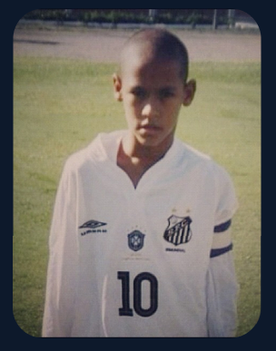
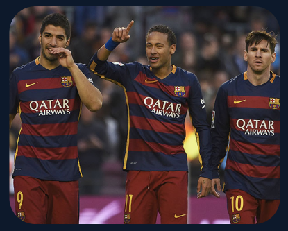

.png)
|
Neymar Jr. nasceu em 5 de fevereiro de 1992, em Mogi das Cruzes, São Paulo. Sua família era muito pobre, e Neymar Jr. cresceu em uma casa simples em Praia Grande, São Paulo, juntamente com seus pais, Neymar Santos Sr. e Nadine Santos, e sua irmã, Rafaella Santos. |
Desde criança, Neymar Jr. adorava jogar futebol. Ele costumava jogar com seus amigos na rua, improvisando com bolas feitas de meias ou pedaços de papel amassados. Seus pais logo perceberam o talento do filho e o encorajaram a jogar em clubes locais.
|
Neymar Jr. começou a jogar futebol organizado no clube Portuguesa Santista, onde jogou por três anos antes de se transferir para o Santos FC, um dos maiores clubes do Brasil, com apenas 11 anos de idade. No Santos FC, Neymar Jr. se desenvolveu rapidamente como jogador e, em 2009, aos 17 anos, fez sua estreia no time principal. Ele impressionou a todos com sua habilidade e técnica em campo, e rapidamente se tornou uma estrela em ascensão. |
 |
No Santos FC, Neymar Jr. se desenvolveu rapidamente como jogador e, em 2009, aos 17 anos, fez sua estreia no time principal. Ele impressionou a todos com sua habilidade e técnicas em campo, e rapidamente se tornou uma estrela em ascenção.
Ao longo dos anos, Neymar Jr, conquistou vários títulos importantes com o Santos FC, incluindo a Copa Libertadores da América de 2011, antes de se transferir para o Barcelona em 2013. No Barcelona, ele jogou ao lado de Lionel Messi e Luís suárez, formando um dos trios mais temidos do futebol mundial.
|  | Em 2017, Neymar Jr. deixou o Barcelona e se transferiu para o Paris Saint-Germain em uma transferencia recorde de 222 milhões de euros, tornando-se o jogador mais caro da história do futebol. No PSG, ele continuo a impressionar com suas habilidade em campo, ajudando o clube a conquistar vários títulos nacionais e internacionais. |
Fora do campo, Neymar Jr. também se tornou um icóne global, aparecendo em comerciais de televisão, programas de tv e revistas de moda. Ele é conhecio por seu estilo extravagante e por ser um dos jogadores de futebol mais populares nas redes sociais.
| No entanto, a vida pessoal de neymar jr. nem sempre foi fácil. Ele foi alvo de críticas por seus mergulhos e comportamento petulante em campo , além de ter sido acusado de evasão fiscal e agressão sexual. Ele também enfrentou problemas de relacionamento com sua fámilia e amigos próximos. |
Apesar disso, Neymar Jr. continua sendo uma figura importante no mundo do futebol e é amplamente considerado um dos jogadores mais talentosos e bem-sucedidos da história do esporte. Sua história de vida inspirou muitos jovens jogadores em todo mundo a perseguir seus sonhis e acreditarem em si mesmos.